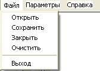

Диалоги (ч. 2)
Дальше – сложней.
Открыть файл просто, но вот при сохранении нам придется учитывать много вещей:
1) Пользователь может сохранять новый файл, который он только что набрал.
То есть, переменная myfile пуста и не содержит имя файла.
В таком случае придется выводить диалог SaveDialog1, чтобы пользователь указал имя файла.
Когда он укажет имя, присвоить его переменной myfile и сохранить Memo в указанный файл.
2) Пользователь может сохранять новый файл, как в предыдущем примере.
Мы выведем диалог, но он его не завершит – нажмет кнопку "отмена" или красный крестик в верхней части окна справа.
Значит, сохранять ничего не нужно, мы ведь не знаем, куда сохранять!
Но придется его предупредить, что файл не сохранен!
3) Пользователь может сначала открыть файл и изменить его, а потом сохранять.
В переменной myfile это имя уже есть, диалог не нужен, просто перезаписываем этот файл.
4) Пользователь может сохранять файл, текст которого не изменялся.
В таком случае, просто игнорируем его команду!
Видите?
Пользоваться диалогами несложно, но как много приходится учитывать во время проверок действий пользователя!
Нужно учитывать каждую мелочь, иначе вам скажут, что ваша программа полна "багов" - мелких неисправностей.
Итак, пишем процедуру сохранения, сразу под процедурой открытия:
{Процедура сохранения файла}
procedure Sohranyaem;
begin
with fMain do begin
//если изменений не было, выходим из процедуры,
//ничего не делая:
if not izmen then Exit;
//Если файл уже открывался, и в переменной myfile
//есть его адрес и имя, просто перезаписываем этот файл:
if myfile <> '' then begin
Memo1.Lines.SaveToFile(myfile);
izmen := False;
Exit; //выходим после сохранения
end; //if
{Файл новый, переменная myfile еще пуста. Дальше есть два варианта:
пользователь выберет или укажет файл в диалоге, или не сделает этого}
//если выбрал файл:
if SaveDialog1.Execute then begin
//прописываем адрес и имя файла в переменную:
myfile := SaveDialog1.FileName;
//если нет расширения *.txt то добавляем его:
if copy(myfile, length(myfile)-3, 4) <> '.txt' then
myfile := myfile + '.txt';
//сохраняем Memo в указанный файл:
Memo1.Lines.SaveToFile(myfile);
//файл сохранен, изменений нет:
izmen := False;
end //if
//если не выбрал файл:
else ShowMessage('Вы не указали имя файла, файл не сохранен!');
end; //with
end;
Приведенный выше код имеет достаточно подробные комментарии, так что все должно быть понятно.
Новое, что вы могли увидеть – директива Exit.
Эта директива досрочно завершает работу процедуры (или функции).
То есть, если выполнено условие и отработан нужный код, Exit заставляет процедуру завершить работу.
Остальной код, который есть в этой процедуре, не выполняется.
Теперь мы можем создать обработчик главного меню "Файл – Сохранить", и там прописать вызов этой процедуры:
Sohranyaem;
Тоже самое делаем для команды PopupMenu "Сохранить".
Далее идет команда главного и всплывающего меню "Выход".
Тут все просто, в обоих случаях пишем команду
Close;
Далее идет раздел "Параметры".
Создаем обработчик "Выбрать шрифт", там все просто:
if FontDialog1.Execute then Memo1.Font := FontDialog1.Font;
Точно также и с подразделом "Выбрать цвет":
if ColorDialog1.Execute then Memo1.Color := ColorDialog1.Color;
Далее вернемся в раздел "Файл".
Здесь у нас остался подраздел "Закрыть".
Создаем для него обработчик, и запишем текст:
{если файл не сохранен, предупреждаем пользователя об этом. Если он
желает сохранить, то вызываем процедуру сохранения:}
if izmen then
if Application.MessageBox('Файл изменен. Сохранить?', 'Внимание!',
MB_YESNO+MB_ICONQUESTION) = IDYES then Sohranyaem;
//теперь закрываем текущий файл:
Memo1.Clear; //очищаем Мемо
myfile := ''; //нет имени текущего файла
izmen := False; //нет изменений
Здесь не так много текста, и он вполне понятен, поэтому не будем для него делать отдельную процедуру.
Просто скопируйте текст, создайте обработчик событий для "Закрыть" PopupMenu и вставьте этот же текст туда.
Примерно тоже самое нам придется сделать и для события формы onClose – ведь мы заранее не можем знать, каким образом пользователь закроет форму, через команду главного меню "Файл – Закрыть", через команду всплывающего меню "Закрыть", нажмет ли он красный крестик наверху или нажмет горячие клавиши <Alt + F4>!
Поэтому для проверки – есть ли в программе несохраненный текст, мы используем событие onClose, которое случается при попытке закрыть форму, то есть в данном случае всю программу.
Здесь код будет таким же, как и в предыдущем примере, но раз мы закрываем всю программу, нам не нужно выполнять блок закрытия файла.
Просто проверим, есть ли изменения, и если они есть, выведем запрос – сохранить ли их.
Если пользователь ответит "Да", значит, вызовем процедуру сохранения:
{если файл не сохранен, предупреждаем пользователя об этом. Если он
желает сохранить, то вызываем процедуру сохранения:}
if izmen then
if Application.MessageBox('Файл изменен. Сохранить?', 'Внимание!',
MB_YESNO+MB_ICONQUESTION) = IDYES then Sohranyaem;
Теперь введем еще одну команду для обоих меню – "Очистить".
Она будет предназначена на случай, если пользователь введет абракадабру, а потом решит очистить текст.
Я намеренно оставил это действие на конец, чтобы вы могли усвоить, что в процессе работы над программой меню может изменяться!
Откройте редактор MainMenu, в разделе "Файл" в самом низу добавьте подраздел "Очистить".
Затем мышкой перетащите его на место линии разделов, при этом линия опустится вниз, а новый подраздел встанет на ее место:
Создайте для команды "Очистить" обработчик, и впишите туда текст:
{MainMenu - Файл - Очистить}
procedure TfMain.N17Click(Sender: TObject);
begin
//очищаем Мемо:
Memo1.Clear;
//если открытого файла нет, то нет и изменений:
if myfile = '' then izmen := false
//иначе текст изменен:
else izmen := true;
end;
Сделайте то же самое для всплывающего меню – создайте раздел "Очистить", а в его обработчик скопируйте тот же текст.
Осталось создать модальное окно fAbout, где Вы укажете, что это текстовый редактор, второй версии.
Сделайте это самостоятельно и привяжите вызов этой формы к команде главного меню "Справка – О программе".
Все, сохраняйте, компилируйте и проверяйте, как работает программа!
У нас получился несложный, но вполне профессиональный редактор текстов.
Одно замечание: текст мы сохраняем, но вот выбранный шрифт и цвет окна Вы сохранить не можете, об этом мы будем говорить на других лекциях, когда научимся сохранять параметры.